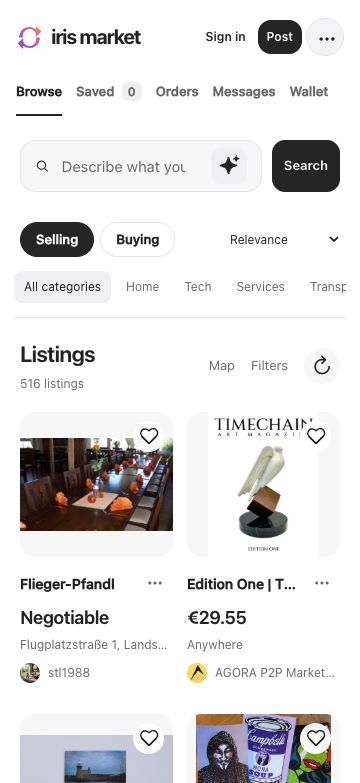
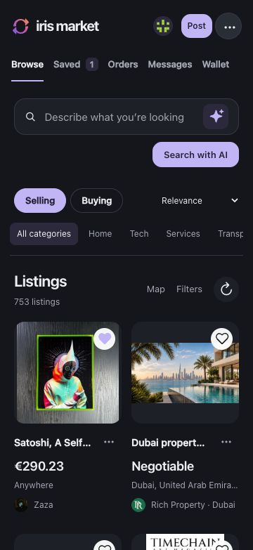

Selling and buying
Browse goods, services and tasks shared over Nostr.
Private messages
Encrypted conversations on web and native apps.
Optional AI
Search with a local model on your device.
Maps and transport
Explore nearby listings and arrange deliveries or rides.
Command line
Install the CLI, try an offline preview, or connect an assistant through MCP. Live profiles use a secret supplied through secure credential storage.
CLI and MCP reference ↗Windows CLI requires the Microsoft Visual C++ x64 runtime.
cargo install iris-market --version 0.1.4 --locked iris-market --help iris-market tools iris-market preview ./preview-data